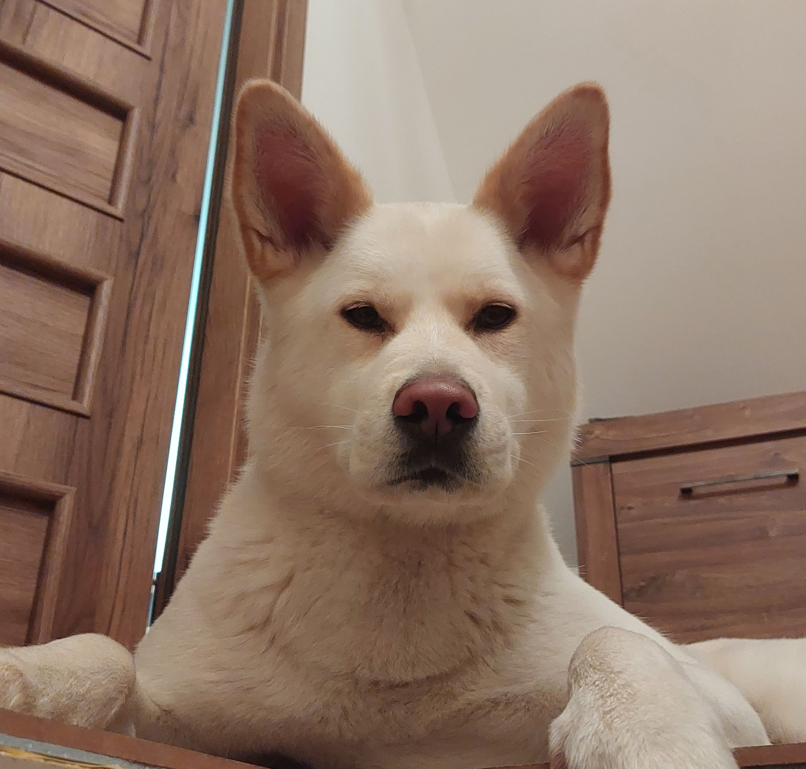

Scribalia
PhD tips
PhD is not a hobby, it is a work
I think it was Confucius (and my quick check upon the Internet confirms it), who said: “Find a job you love and you will never have to work a day”. I like this sentence and I think I get it’s philosophical meaning but I also find it bit misleading. It tells only about a bright side of the job, while there is no just one(bright)-side job on this planet. Actually, even beyond the planet. The moon, for example, from the Earth perspective only the bright side is visible but there is a dark one, for sure. Same with any project. There is ALWAYS, both bright side, which you will be attracted by and you may love it, and dark one, which may haunt you and eat you, if you ignore it.
For most of people, and especially PhD students just starting their journey, PhD project seems like the job of dreams. People doing their PhD pursuit answers they always wanted to know and while doing so, they work in quite magic environment (lab/field), being surrounded by books and knowledgeable people. Modern technology, only helps with the research, allowing to reach what is unachievable by regular human standards. All this is true for most of the projects, the only wrinkle is that there is also other stuff associated with every project, much less notable and convenient, which you have to handle if you want to complete the project. For example, a fieldwork may be a big challenge (when you collect your samples in, euphemistically speaking, unfavourable weather conditions), but if it is your favourite part (and weather is not so nasty all the time), you enjoy it, and it does not feel like a job. But then, you need to analyse the data and report them (i.e. write papers) otherwise your effort in the field does not matter. If data analysis or reporting is not your cup of tea, you are going to suffer. If you suffer too much, perhaps PhD project is not for you. If you suffer a little, it is understandable, nobody likes everything about their project. Still, you just need to eat this frog (or rather many frogs), and eat it quickly (before it eats you)…so you can go to the field again, with a new project.
PhD project is not a hobby. A hobby stuff you do in a free time and only if you are in a mode for doing it. PhD is a work, with all its ups and downs. To complete it and get all the fruits out of it (knowledge, skills, satisfaction, degree, and more research opportunities) you need to go through both. You also need to treat it seriously. If you do not work honestly (let’s say 40 hours per week) you will lose your motivation and fail with completing the project, and probably fail with your future plans.
If you can efficiently handle less pleasant parts of your job, your PhD, it will be a dream job for you. So, just do what is to be done, and take the energy from the most enjoyable parts!
Read, read and once again read.
It is well established that reading is a meta-capability that not only maintains our brain functions (e.g., concentration) but also increases our knowledge and intelligence. This is important in everybody’s life but if you aspire to get PhD you need to outperform an average reader. You need to read proper scientific literature and you need to read a lot of it. This is because to perform your study, and perform it well, you need a lot of knowledge and creative and critical thinking. Those can be only developed through regular reading.
When you write your manuscripts, especially the introductory and discussion parts, you definitely need to refer to scientific literature. This naturally forces you to read papers because you need to cite them. However, reading papers when you are already at the writing stage is not sufficient. Being in writing mode you are most likely to be just screening the papers for the information you need, and so you will not gain much of it, just citation. The best would be if you had read these papers much before, and at the time of writing you went back to them, to get your citation. Obviously, there would be papers which you did not know, found only while looking for a supporting reference, but they should constitute rather minority of your reference list.
The best reading strategy is that you read every day, let’s say for an hour. You need to make a habit of it, so plan the reading a paper daily. If you read one-two papers every day, over the five days of a working week you will read them 5-10. Then, while reading the paper, read it as a whole item, not just a single section you are the most interested in. Read the intro, read the methods, read results and discussion. Then, think of the results and interpretation, think of the idea of the study, trying to figure out what you do like and what do you dislike about the study. If you can share these thoughts with your colleagues during a seminar or lunch break is even better (and you have a topic for a small talk). This all will help you to memorize the content, and develop critical thinking. I would also add, read sections like: acknowledgments and authors contribution, so you will get some insight into a logistical know-how of the study. Either you use a Zotero, Mendeley or whatever app to read the articles, or you read them in paper, make notes. Even if the notes turned out to be not useful after all, they will help you to consciously process the content.
Regular reading papers will make a true expert of you, and will help you to move your project forward and move it smoothly, so you will have a fun of it. We think that motivation comes from inside. It does, but the motivation has to be constantly fed properly from outside otherwise it starves and at some point diminishes into thin air. Regular papers reading does the job. It keeps you updated with the current literature and so motivated and enthusiastic about scientific endeavours. In other words, your scientific performance very much depends on your enthusiasm but your enthusiasm depends on your performance. It is circular and, to keep this vicious circle running, you need external stimulation.
Last tip, to make the reading a daily routine, as I said before, you need to make a habit of it. And as experts on personal development recommend, you need a strategy to create a habit: a small dosage at the beginning, progressively increased, with the routine being associated with a pleasure. So, you can start with the reading planned twice a week (not a big deal after all, right?), you do the reading first thing at the morning (so it does not compete with your other, maybe urgent tasks; urgent tasks are powerful time managers) and you do it in a deep learning mode (no emails, no phone calls, no message, literally no distractors, just you and your paper). A cup of coffee (or a tea) accompanying the session will not hurt.
Regular reading scientific literature will not hurt you, it will empower you!
Chunkilization
If you just check this word in a dictionary and could not find it is because I made it up. What does it mean, you will soon figure out. Let me start with a little story: At Polish Polar Station in Hornsund (Svalbard), where I have been working for twenty years, there used to be dogs, a Greenland breed. They were supposed to bark at approaching polar bears, so to alarm the people about the presence of the big guy. How efficient the system was it is disputable but this story is not about the polar bear protection, it is about enthusiasm and the size of challenge. The dogs were apparently well fed as the rate and amount of food was carefully calculated by veterinarians and they looked healthy but they were ALWAYS in a mood to eat more. They were super excited when the food was on the way, quickly consuming what they got, and just after looking forward to the next meal. Once upon a time, they crept into a warehouse where their food supplies for half a year were stored. Nobody could see them entering so it is hard to say how enthusiastic there were at the moment but when they left, two days later, they did not want to eat at all! Surprisingly, given their enthusiasm about the food, and the time they spent in the warehouse, they have not eaten all the supplies. What is the conclusion of the story? There are two. First, dogs enthusiasm about the food ended with the food over-dosage. Second, despite enormous enthusiasm, they could not eat all at once.
I would not like to say that PhD students and their projects are like the polar dogs and their food but it is a good metaphor for the PhD students enthusiasm and the challenge which PhD project imposes. At the beginning everybody is super excited, which is understandable and great. At some point, however, and this moment will come for sure, especially after a hard-working period, one is fed up with everything, no matter how great the project is. Then, PhD project is a big endeavour, and cannot be done with a single approach.
This fluctuation of the enthusiasm and motivation about a project, including PhD, is not just my observation, it is actually well recognized psychological phenomena. The highest level of the motivation about a project (let’s from now focus on the motivation, which is more relevant here while not exactly the same as enthusiasm) are at the beginning, then just before the end of the project. In between the motivation drops, to fluctuate at a lower level. Sometimes the level drops considerably, and one should do their best to stay above a critical line, to keep the project running. It is important to be aware of these fluctuations. They are natural. If we feel tired with the project it does not mean the project is bad or we do not fit to the project. It is just a natural human way of dealing with a project which lasts for a longer period of time. With every longer lasting project we sometimes simply get bored and tired. No matter what the project is about, what was our initial enthusiasm and what is our performance in the project. There will be some days, sometimes weeks we will feel overwhelmed. What is important, and we have to carefully watch for, is that our motivation does not drop below the critical line, and the periods of the low motivation are not months-lasting.
There are many ways to keep ourselves motivated and prevent falling into a valley of a scientific death. One of them is dividing your project into small chunks. You cannot eat all at once, you need to divide the supplies into small portion. What is a unit of chunk? Well, it depends on your appetite, stomach size and what your vet recommends 😉, but basically you divide it until manageable pieces. PhD project is a single, big chunk, if you refer to your all the projects in your life time. For sure, it has to be split. So you can split it into chapters, papers you are going to write. Those are still too big, to make each at once, but each consists of several sections. They can also be chunks. Sometimes these sections are still are too big to handle them at once, so you can think of each paragraph in the section as a chunk, and this would be probably the limit of your ‘chunkilisation’ (with a philosophical approach you could probably go with this into infinity). A paragraph (probably more than one) is something you can definitely handle during a working day. Make it as a plan for the day and just do it!
If you reasonably divide your project into chunks, and you work on them consistently, your project will move forward regardless of the motivation. Besides, retrospectively looking on your performance you will motivate yourself. Seeing how much you have already done, will drag your motivation up and so you will never reach the critical line.
3D-visualization
Whatever you are doing, either it is working with your data (dimension one), packing yourself for a scientific expedition (dimension two) or planning your future (dimension three), visualize the things. It helps to understand the world and prepare yourself better for that what is to come. And it works for everybody, no matter if they consider themselves driven by visual cues or not.
#1D When you work with your data, and run statistical models, reading a table with estimates may not be enough to understand what is going on. Sometimes models are super complex, and then raw estimates actually do not tell you anything that would be meaningful. But if you (properly) plot your data, you will not only understand the modelling output but you are also likely to detect what might be wrong with your data and the model, if that is the case. Then, visual cues convey any information to an audience much better than hundreds of words. People exposed to visual representation of the data/results tend to focus more. Thus reporting your results with bunch of plots, you will make your presentation clear and catchy, and it will be better remembered.
#2D When I am preparing the stuff for the fieldwork, to make sure I have all the equipment collected, I imagine myself doing this fieldwork. For example, I am thinking about capturing a bird and ringing it. For that I need a net to capture the birds, then I need a ring, to put it on the bird, and a plier to apply the ring. Then, I need to note everything, which requires a notebook and a pencil. If I am using a pencil, and I would make a mistake, to correct it, I may use an eraser. Since I am often capturing and ringing the birds in wind conditions I may also need a paper clip, to hold the pages of the notebook, so they will not tear off, and be annoying noisy. Having already as many as seven items I may need a bag to carry all the stuff. And the visualization goes on and on, until I am done with this imaginary fieldwork… Going this way I will make a nice check-up list of all the items I need and following this list I may be sure that I have all what I need for the fieldwork.
#3D We all fall into a trap of planning fallacy (see more text on here). We plan to do something by a certain date and it turns out that we miscalculated the time needed to complete the task. The bigger task, the more inaccurate we may be. This is primarily because we underestimate external factors that are unpredictable and influential. For example, we plan to complete our fieldwork within two years but a pandemic starts and our fieldwork must be postponed, and in total we need three years (or more) to complete the task. The other reason of planning fallacy is, however, that we do not plan things properly. We simply consider a date by which the task could or rather should be completed but we do not really consider if this is feasible or not. Simple visualization of the things may help here a lot. Let’s consider an example (as exemplum trachunt as ancient Romans used to say). If today is Wednesday and I make a promise (to anybody, including myself) to complete a task by Friday, and the task requires 10 working hours but I will not devote 5 hours per day to handle this task, I will not be able to meet the deadline. Visualizing things, meaning truly calculating the time the things need to be done (and asking the question is what we plan is indeed feasible in the set up time frame), really changes the perspective and may help to mitigate the planning fallacy.
Visualization makes your life easier, and as a matter of fact also more interesting. Do it! It is worth of it.
Scientific text is not a poem, and a writer identity does not matter much.
Scientific text is not a poem, and a writer identity does not matter much. Scientific text has its specificity. It is a medium to transfer the knowledge about the results of the study. The data and results are the most important content and here authors identity matters a lot, while the text is just a description, a wrapping. It just has to be complete, clear and concise, so whatever it describes, it will be correctly understood by a reader (results will be correctly interpreted, conclusions will not be distorted, protocols will be faithfully reproduced, etc). In scientific text any redundant or repetitive descriptions must be removed (one has to say only what is important for the study and say it just once) while building the story at first approach, redundant descriptions and repetitions are natural. To get a crips and coherent story, one needs a lot of time and effort. Some people, due to their predisposition and/or experience, may be more accurate than the others with their first draft but regardless of their skills, their manuscript will always require multiple rounds of rewriting to sound grounded.
If you are not much experienced in writing a scientific text, you may find this process painful, and this is for two reasons. First, you produce the first draft with blood, sweat and tears, because you have not yet developed your writing strategy, so you struggle with structuring the text and clarifying sentences. Second, after finally completing the first draft, you are content and proud of yourself, and believe that the text is perfect, so when it comes back with a feedback from your co-authors and/or supervisors, you feel devastated. Understanding ontogeny of a good manuscript is thus important for your well-being. It is natural to feel like struggling when writing a manuscript but you must not use the process for self-evaluation.
It may not be easy to refrain from this auto-evaluation during the manuscript writing but you have to do it, to get your manuscript done, to have it in a good shape, and to learn from all this experience. So keeping that in mind, when you give someone your scientific text to review, and they modify the sentences improving content clarity (instead just saying that it is unclear), don’t complain much. Think of it as a gift! As a matter of fact it is, the people correcting your text made their effort for you! Perhaps they are more experienced in writing and their sentences better reflect what you really wanted to say. If this is the case, just appreciate it and accept the better sentence. But do not accept it blindly, learn from it! Only then, it all makes sense, as not only your manuscript benefits but you are developing your writing skills (so next time you will suffer less😉).
Upon every revision of your text, it may feel like its original version disappears. This is often painful (as you created it with blood, sweat and tears) but it does not matter. The sooner you accept it the better for you. Revising is very much important part of the manuscript ontogenesis - version one becomes a substrate for the version to and there is no version two without version one! Some people say that good manuscript is a manuscript rewritten several times. Only then is complete, clear and concise.
Yuki
Yuki is not just a dog, is a life changer. Before Yuki era, the life was super hectic and running fast. With Yuki, the speed and intensity have not changed much, but quality of my life improved enormously. She has taught me (and still I am learning a lot from her) how to focus on essentials, ignore stupidity of the world and simply enjoy the day. Below you can find Yuki’s decalogue in all the languages she potentially understand, especially if you possess an extra motivator (a sausage).
Being Yuki’s kahu (as Hawaiian would call it) is big honour and responsibility. I take it seriously, and joyfully.

Polish: Dekalog Yuki
1) Nie należy siedzieć/leżeć w jednym miejscu godzinami, trzeba zmieniać i miejsca i pozycje. A jak się wstaje po lekko dłuższym siedzeniu czy leżeniu, to trzeba się rozciągnąć! Im bardziej spektakularne jest to rozciąganie tym jest efektywniejsze w podnoszeniu poziomu energii witalnej, choć trzeba uważać jak się to robi na schodach.
2) Jak jest się zmęczonym to należy odpocząć!
3) Wygłupiać (sensu szaleńczo bawić) trzeba się codziennie, najlepiej w towarzystwie, a przynajmniej przy świadkach. Chętnych do zabawy można sobie zrekrutować i właściwie nie ma opcji by odnieść tu porażkę – w najbardziej beznadziejnych przypadkach to tylko kwestia ilości włożonego czasu i intensywności rekrutacji.
4) Każdy żelazny punkt dnia (jedzenie, spacer) może być źródłem eksplodującej radości, a więc nie potrzeba wielkich rzeczy, żeby się cieszyć.
5) Z niektórymi po prostu nie da się dogadać…
6) a napotkany na drodze wróg istnieje tylko tu i teraz, wszystkie negatywne emocje jakie towarzyszą temu spotkaniu (jakkolwiek nie byłyby silne) znikają wraz z wrogiem.
7) Podczas polowania liczy się tylko polowanie - absolutna nieczułość na wszelkie bodźce zewnętrzne w dużym stopniu decyduje o powodzeniu akcji.
8) Wiele sukcesów łowieckich właściwie jest kwestią szczęścia. Świat oferuje tu całą gamę możliwości, trzeba mieć tylko oczy a przede wszystkim uszy wciąż szeroko otwarte, niezależnie od tego co się akurat robi.
9) Kuna rekonstruująca dach domu w którym się śpi, stanowi niewiele znaczącą składową krajobrazu akustycznego, którą zwyczajnie należy ignorować, ale kuna w szopie to już zupełnie inna sprawa – innymi słowy problem na który nie ma się wpływu, nie jest problemem.
10) Jak kot nie schodzi z drzewa przez trzy godziny to znaczy, że należy mu odpuścić.
English: Yuki’s Decalogue
1) Don’t sit/lie in one place for hours, you need to change both places and positions. And if you get up after sitting or lying down for a little longer, you need to stretch! The more spectacular this stretching is, the more effective it is in raising vital energy levels, although you have to be careful while doing it on the stairs.
2) If you’re tired, just rest!
3) You need to fool around (in the sense of being wildly entertained) every day, preferably in company, or at least with a few witnesses. Those willing to play can be recruited and there is virtually no option to fail here - in the most hopeless cases, it is just a question of the amount of time put in and the intensity of the recruitment.
4) Every ironclad point of the day (eating, walking) can be a source of exploding joy, you don’t need really big things to enjoy.
5) Some folks you just can’t get along with….
6) and the enemy encountered exists only here and now, all negative emotions that could accompany the encounter (however strong they may be) disappear with the enemy.
7) When hunting, all that matters is the hunt - absolute insensitivity to all external stimuli largely determines the success of the action.
8) Many hunting successes are actually a matter of luck. The world offers a whole range of possibilities, you just have to keep your eyes and, above all, your ears widely open, no matter what you are doing at the moment.
9) A marten reconstructing the roof of the house in which you are sleeping is an insignificant component of the soundscape and so you should ignore it. But a marten in a shed is entirely different matter; in other words, a problem beyond your control is not a problem.
10) If a cat doesn’t come down from a tree for three hours, that means you should let it go.
Spanish: Decálogo de Yuki
1) No permanezcas sentado/tumbado en un mismo sitio durante horas, necesitas cambiar tanto de sitio como de postura. Y si te levantas después de estar sentado o tumbado durante más tiempo, ¡necesitas estirarte! Cuanto más espectacular sea este estiramiento, más eficaz será para elevar los niveles de energía vital, aunque hay que tener cuidado al hacerlo en las escaleras.
2) Si estás cansado, ¡descansa!
3) Hay que hacer el tonto (en el sentido de entretenerse salvajemente) todos los días, preferiblemente en compañía, o al menos con algunos testigos. Se puede reclutar a quienes estén dispuestos a jugar y aquí prácticamente no hay opción al fracaso: en los casos más desesperados, sólo es cuestión de la cantidad de tiempo que se dedique y de la intensidad del reclutamiento.
4) Cada punto férreo del día (comer, pasear) puede ser una fuente de alegría desbordante, no hacen falta cosas muy grandes para disfrutar.
5) Hay gente con la que simplemente no puedes llevarte bien….
6) y el enemigo encontrado sólo existe aquí y ahora, todas las emociones negativas que pudieran acompañar al encuentro (por fuertes que sean) desaparecen con el enemigo.
7) Cuando se caza, lo único que importa es la caza: la insensibilidad absoluta a todos los estímulos externos determina en gran medida el éxito de la acción.
8) Muchos éxitos de caza son en realidad cuestión de suerte. El mundo ofrece todo un abanico de posibilidades, sólo hay que mantener los ojos y, sobre todo, los oídos bien abiertos, independientemente de lo que se esté haciendo en ese momento.
9) Una marta reconstruyendo el tejado de la casa en la que estás durmiendo es un componente insignificante del paisaje sonoro y por eso debes ignorarlo. Pero una marta en un cobertizo es algo totalmente distinto; en otras palabras, un problema que escapa a tu control no es un problema.
10) Si un gato no baja de un árbol en tres horas, significa que debes dejarlo marchar.
French: Le décalogue de Yuki
1) Ne restez pas assis/allongé au même endroit pendant des heures, vous devez changer d’endroit et de position. Et si vous vous levez après être resté assis ou allongé un peu plus longtemps, vous devez vous étirer ! Plus ces étirements sont spectaculaires, plus ils sont efficaces pour augmenter les niveaux d’énergie vitale, bien qu’il faille faire attention en les faisant dans les escaliers.
2) Si tu es fatigué, repose-toi !
3) Il faut s’amuser (dans le sens de se divertir) tous les jours, de préférence en compagnie, ou au moins avec quelques témoins. Ceux qui sont prêts à jouer peuvent être recrutés et il n’y a pratiquement aucune possibilité d’échec - dans les cas les plus désespérés, il ne s’agit que d’une question de temps et d’intensité du recrutement.
4) Chaque moment de la journée (manger, marcher) peut être une source de joie explosive, il n’est pas nécessaire de faire de grandes choses pour en profiter.
5) Il y a des gens avec lesquels on ne peut pas s’entendre….
6) l’ennemi rencontré n’existe qu’ici et maintenant, toutes les émotions négatives qui pourraient accompagner la rencontre (aussi fortes soient-elles) disparaissent avec l’ennemi.
7) À la chasse, tout ce qui compte, c’est la chasse - l’insensibilité absolue à tous les stimuli extérieurs détermine en grande partie le succès de l’action.
8) De nombreux succès de chasse sont en fait une question de chance. Le monde offre un large éventail de possibilités, il suffit de garder les yeux et surtout les oreilles largement ouverts, quoi que l’on fasse à ce moment-là.
9) Une martre qui reconstruit le toit de la maison dans laquelle vous dormez est un élément insignifiant du paysage sonore et vous devez donc l’ignorer. Mais une martre dans une cabane, c’est tout à fait différent ; en d’autres termes, un problème qui échappe à votre contrôle n’est pas un problème.
10) Si un chat ne descend pas d’un arbre pendant trois heures, cela signifie que vous devez le laisser partir.
Russian: Декалог Юки
1) Не сидите/лежите на одном месте часами, нужно менять и места, и позы. А если вы встаете после того, как посидели или полежали еще немного, вам нужно потянуться! Чем эффектнее эта растяжка, тем эффективнее она поднимает уровень жизненной энергии, хотя на лестнице нужно быть осторожным.
2) Если вы устали, просто отдохните!
3) Вам нужно каждый день дурачиться (в смысле - безудержно развлекаться), желательно в компании или хотя бы с несколькими свидетелями. Желающие играть могут быть завербованы, и здесь практически нет вариантов провала - в самых безнадежных случаях все зависит только от количества времени и интенсивности вербовки.
4) Каждый железный пункт дня (прием пищи, прогулка) может стать источником взрывной радости, вам не нужны по-настоящему большие дела, чтобы получать удовольствие.
5) С некоторыми людьми вы просто не можете ужиться…..
6) и враг, с которым вы столкнулись, существует только здесь и сейчас, все негативные эмоции, которые могли бы сопровождать встречу (какими бы сильными они ни были), исчезают вместе с врагом.
7) На охоте важна только сама охота - абсолютная невосприимчивость ко всем внешним раздражителям во многом определяет успех действия.
8) Многие успехи на охоте на самом деле являются вопросом удачи. Мир предлагает целый ряд возможностей, нужно только держать глаза и, главное, уши широко открытыми, чем бы вы ни занимались в данный момент.
9) Куница, восстанавливающая крышу дома, в котором вы спите, - незначительный компонент звукового ландшафта, и поэтому его следует игнорировать. Но куница в сарае - это совершенно другое дело; другими словами, проблема, не зависящая от вас, не является проблемой.
10) Если кошка не спускается с дерева в течение трех часов, это значит, что вы должны ее отпустить.